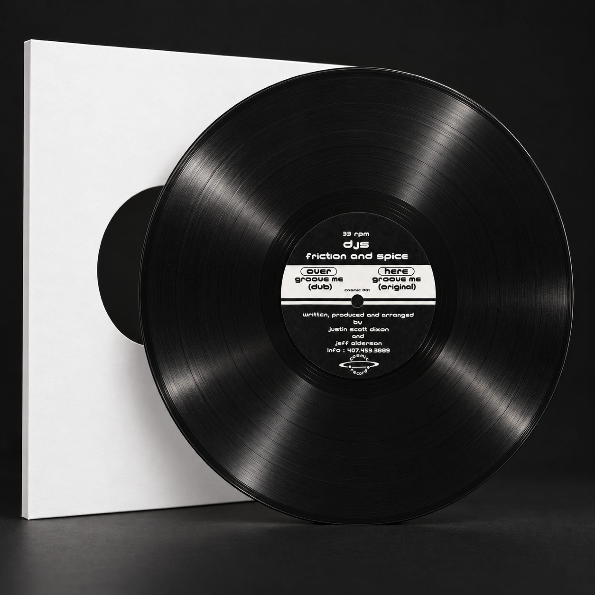
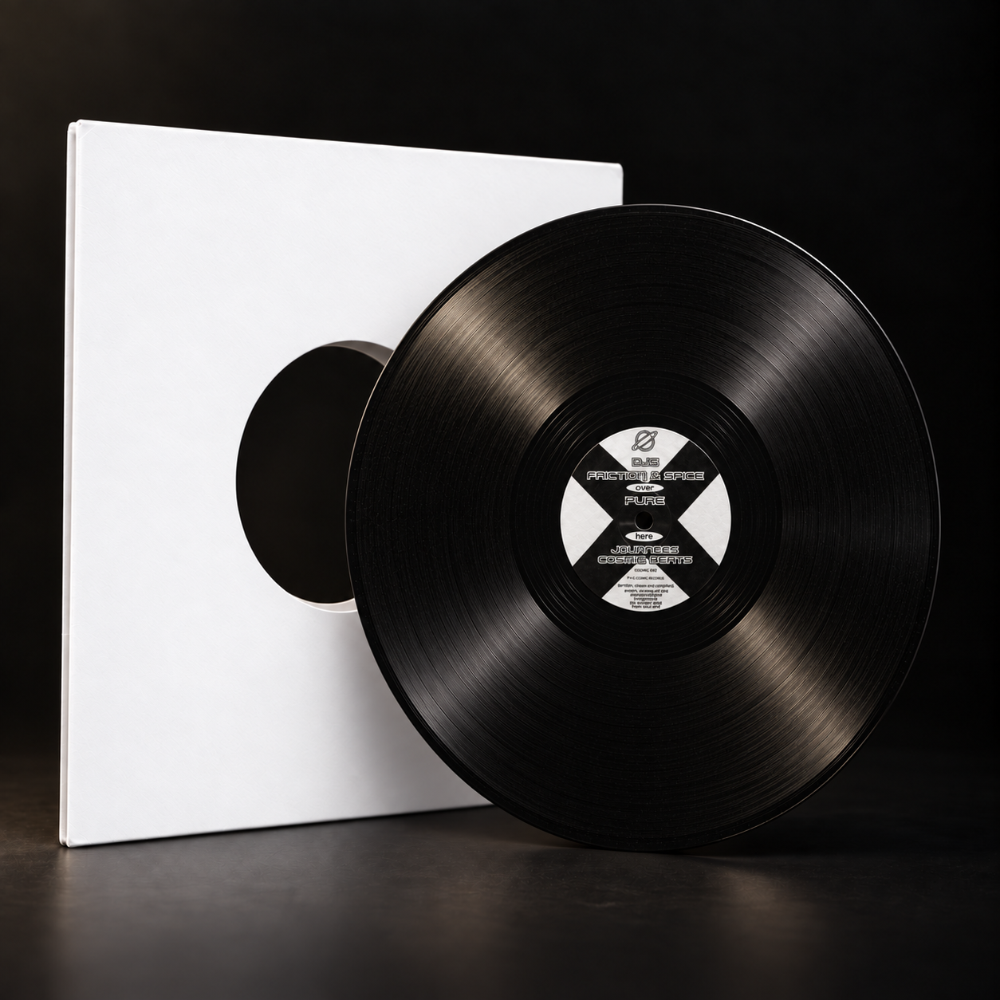
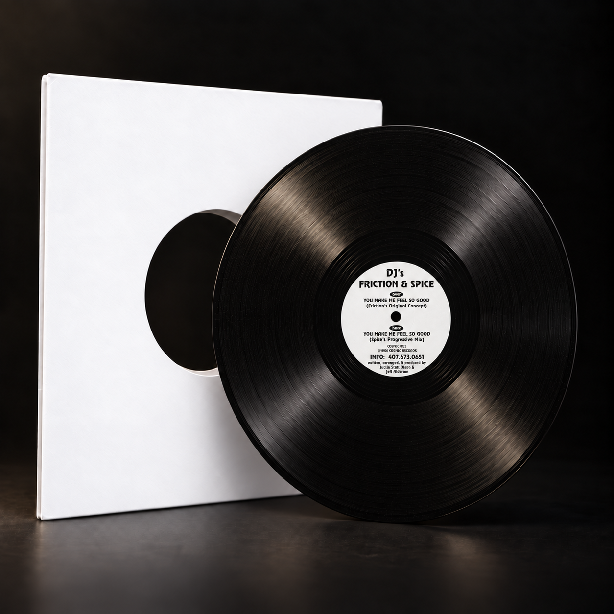
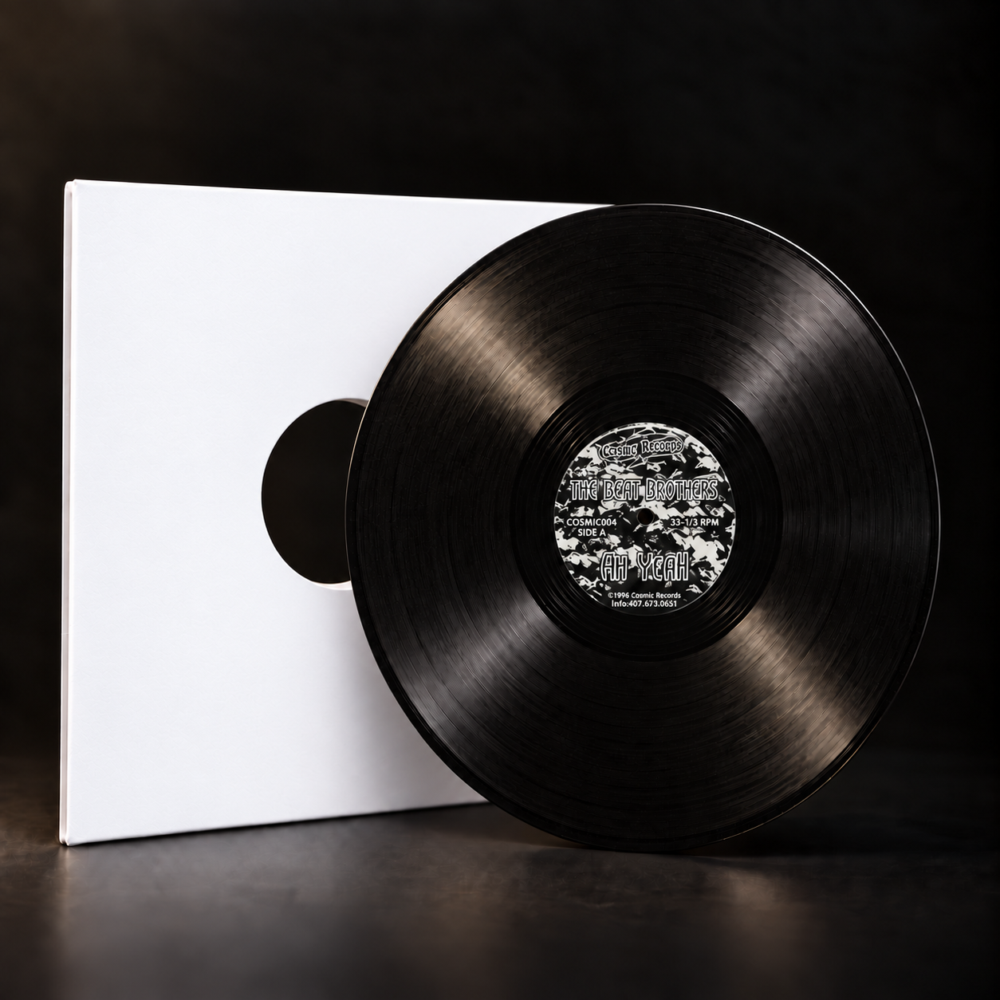

VINYL FOUNDATIONS
Cosmic Records — Catalogue History
Seventeen Cosmic releases connect the early Friction & Spice recordings with the emergence of Voyager. Artists and titles follow Dixon’s corrected archive. Individual release dates remain qualified where unresolved.
Vinyl chronology begins January 1996
OVERVIEW
Cosmic Records — Catalogue History
Seventeen Cosmic releases connect the early Friction & Spice recordings with the emergence of Voyager. Artists and titles follow Dixon’s corrected archive. Individual release dates remain qualified where unresolved.
Artist · Composer · Producer · Catalogue Participant

COSMIC 001
Groove Me
DJ’s Friction & Spice
Exact date unresolved · 12-inch vinyl
Groove Me (Dub); Groove Me (Original).
Co-writer · Co-producer · Co-arranger
Credits and source photographs
Written, produced and arranged by Justin Scott Dixon and Jeff Alderson.
Exact dates and unresolved edition fields are not inferred.

COSMIC 002
Pure / Journees
DJ’s Friction & Spice
Exact date unresolved · 12-inch vinyl
Pure; Journees; Cosmic Beats.
Writer · Arranger · Co-producer
Credits and source photographs
Written and arranged by Justin Scott Dixon; produced by Justin Scott Dixon and Jeff Alderson. Fine-print transcription requires original-resolution verification.
Exact dates and unresolved edition fields are not inferred.

COSMIC 003
You Make Me Feel So Good
DJ’s Friction & Spice
©1996 label · 12-inch vinyl
You Make Me Feel So Good (Friction’s Original Concept); You Make Me Feel So Good (Spice’s Progressive Mix).
Co-writer · Co-producer · Co-arranger
Credits and source photographs
Written, arranged and produced by Justin Scott Dixon and Jeff Alderson.
Exact dates and unresolved edition fields are not inferred.

COSMIC 004
Ah Yeah
The Beat Brothers
©1996 label · 12-inch vinyl
Ah Yeah; Give Me the Music.
Co-writer · Co-producer · Co-arranger
Credits and source photographs
All tracks written, arranged and produced by Justin Scott Dixon and Jeff Alderson.
Exact dates and unresolved edition fields are not inferred.
COSMIC 005
Trixta / Friction
Voyager
1996 — public listing · 12-inch vinyl
Trixta; Friction.
Artist
Credits and source photographs
not printed in the visible portions; specific writing, arrangement and production allocation requires confirmation.
Exact dates and unresolved edition fields are not inferred.
COSMIC 006
Funkee Ass Breaks Vol. 1
DJ’s Friction & Spice
©1996 label · 12-inch vinyl
Electronic Energy; Digital Overload; Get Down To The Funky Beat.
Co-writer · Co-producer · Co-arranger
Credits and source photographs
written, arranged and produced by Justin Scott Dixon & Jeff Alderson, printed on the label. Justin's roles: co-writer, co-arranger and co-producer.
Exact dates and unresolved edition fields are not inferred.
COSMIC 007
The Beat / Relax — also includes Slider
Voyager
©1996 label · 12-inch vinyl
The Beat; Relax; Slider.
Artist
Credits and source photographs
Written / Arranged / Produced heading is visible, but names at the bottom are concealed by the sleeve. Do not fill them from assumptions about Voyager.
Exact dates and unresolved edition fields are not inferred.
COSMIC 008
The Rhythm
DJ’s Friction & Spice
©1996 label · 12-inch vinyl
The Rhythm (Cosmic’s Funky Mix); The Rhythm (DJ Who’s Progressive Mix).
Co-writer / original · Co-producer / original
Credits and source photographs
Specific allocation unresolved.
Exact dates and unresolved edition fields are not inferred.
COSMIC 009
Remix LP
DJ’s Friction & Spice
1996 — public listing · 12-inch vinyl
Groove Me (Remix); You Make Me Feel So Good (Remix).
Artist
Credits and source photographs
original-release participation is established elsewhere, but this pressing's remix and production credits have not been verified. Keep them pending.
Exact dates and unresolved edition fields are not inferred.
COSMIC 010
Lost Worlds / Ultra Intense
Voyager
©1997 label · 12-inch vinyl
Lost Worlds; Ultra Intense.
Co-writer · Co-producer
Credits and source photographs
all tracks written and produced by Justin Scott Dixon & Jeff Alderson. Justin's roles: co-writer and co-producer; arrangement not separately printed.
Exact dates and unresolved edition fields are not inferred.
COSMIC 011
Rhythm Rockin’ / Future Funk
DJ’s Friction & Spice
1997 — public listing · 12-inch vinyl
Rhythm Rockin’; Future Funk.
Artist
Credits and source photographs
release-specific writing, arrangement and production credits pending primary label evidence.
Exact dates and unresolved edition fields are not inferred.
COSMIC 012
Acid Drop / Ah Yeah (RMX)
The Beat Brothers
1997 label · 12-inch vinyl
Acid Drop; Ah Yeah (RMX).
Duo writing / production credit
Credits and source photographs
written and produced by DJ's Friction & Spice. Individual allocation to Justin Scott Dixon and Jeff Alderson should be confirmed; the inspected label uses the duo credit.
Exact dates and unresolved edition fields are not inferred.
COSMIC 013
Work 4 Love
Three Wise Monkeys Meet DJ’s Friction & Spice
1997 — public listing · 12-inch vinyl
Work 4 Love (The Orlando Breaks Mix); Work 4 Love (Back To The Old School Mix).
Collaborator
Credits and source photographs
named collaborator through Friction & Spice; exact writing, remix, arrangement and production allocations remain unverified.
Exact dates and unresolved edition fields are not inferred.
COSMIC 014
The E.P.
DJ’s Friction & Spice
©1998 label · 12-inch vinyl
Go With The Flow; Explorations; Dark Knight.
Co-writer · Co-arranger · Duo production credit
Credits and source photographs
Specific allocation unresolved.
Exact dates and unresolved edition fields are not inferred.
COSMIC 015
Pure Frictions Groove
Voyager
1998 — public listing · 12-inch vinyl
Original Mix; Thorn’s Break; Friction’s Groove.
Artist
Credits and source photographs
produced by Cosmic Records; recorded at Cosmic Studios, Orlando FL USA, printed. Individual writing/production/remix credits are not established by this label alone.
Exact dates and unresolved edition fields are not inferred.
COSMIC 016
Get Jazzed Up
DJ’s Friction & Spice
1998 — public listing · 12-inch vinyl
In The Mind; Alright (Breakbeat Mix); Alright (Hybrid Analogue Mix).
Producer / mixer: In The Mind
Credits and source photographs
A1 produced and mixed by J.S. Dixon. B tracks produced and mixed by L. Mullin & M. Truman. B1 and B2 licensed from Final Phase Records. These are the printed initials; do not expand names without confirmation.
Exact dates and unresolved edition fields are not inferred.
COSMIC 017
Time Travel E.P.
Voyager
1999 label · 12-inch vinyl
Double-title release; exact track titles awaiting primary-label confirmation.
Writer · Producer
Credits and source photographs
written and produced by Justin Scott Dixon, printed on both sides. Justin's roles: writer and producer; arrangement not separately printed.
Exact dates and unresolved edition fields are not inferred.
Groove Me: the first studio
October 1995
Dixon recalls building Groove Me while testing newly arrived equipment in Merritt Island.
A hardware ensemble
The Bass Station Rack supplied the lead voice; Cakewalk sequenced external instruments through the Mackie 1604.
Firestone
Hearing the promo pressing in the club gave Dixon confidence in the mix’s translation and more freedom to focus on writing.
The sound of Voyager
COSMIC 009
Dixon identifies the You Make Me Feel So Good remix as a turning point in sound design and composition.
COSMIC 012
The extended Ah Yeah remix used the larger console as a visual framework for an emotional arrangement.
COSMIC 017
Time Travel marks his first entirely Logic-sequenced release, in his account, alongside a move to digital mixing.
Credits belong to tracks
The E.P.
Explorations pairs Dixon with Jason Morgan; Go With The Flow with Jeff Alderson; Dark Knight with Chris Hand.
Get Jazzed Up
The label credits J.S. Dixon for producing and mixing In The Mind. The licensed Alright versions carry different production credits.
Release chronology
January 1996 begins the artist-confirmed vinyl chronology. Copyright dates and provisional catalog years are not exact release dates.
Sources and attribution
Later creative-history passages also draw on Dixon’s direct artist interview. Linked sources support the specific subjects stated below.
- Artist source photographs
Label and pressing references supplied by the artist.